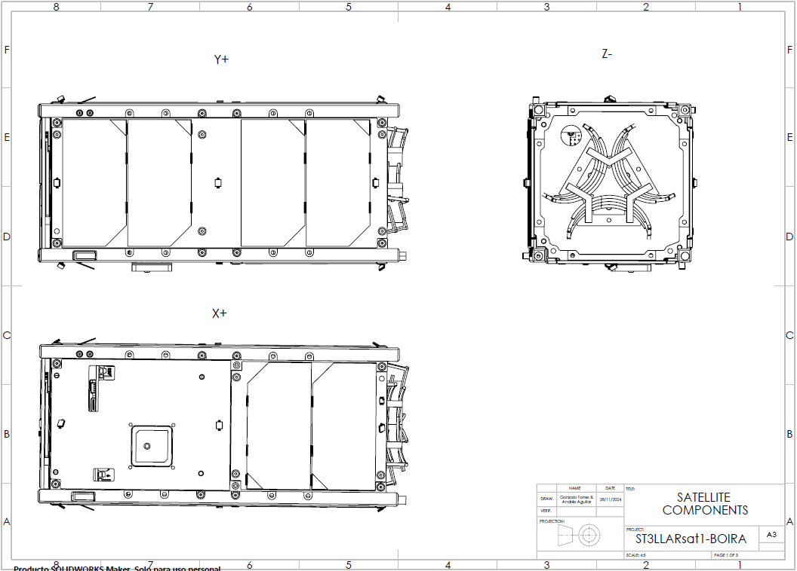
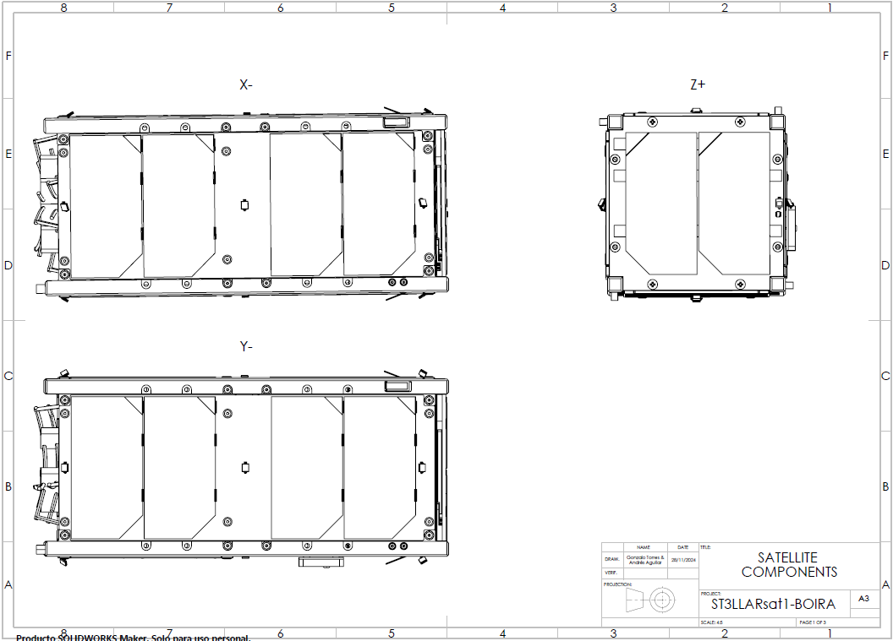
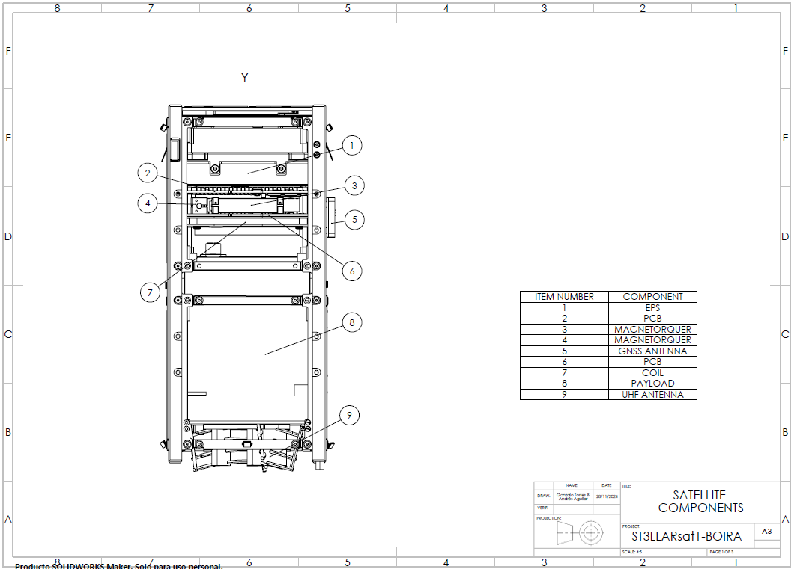
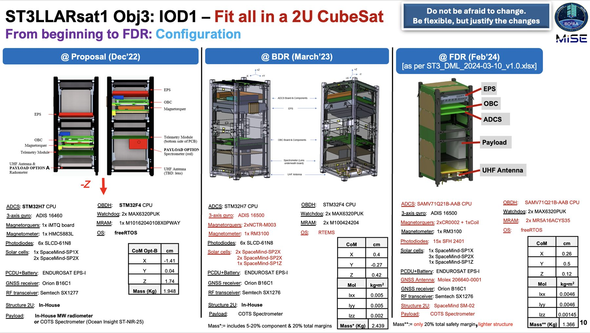
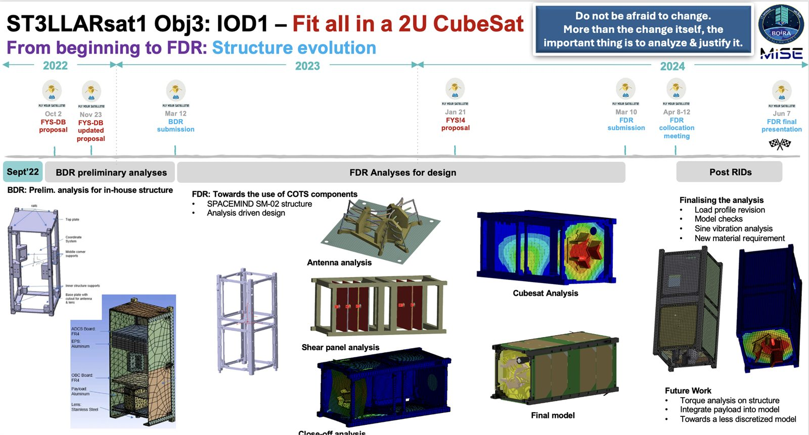
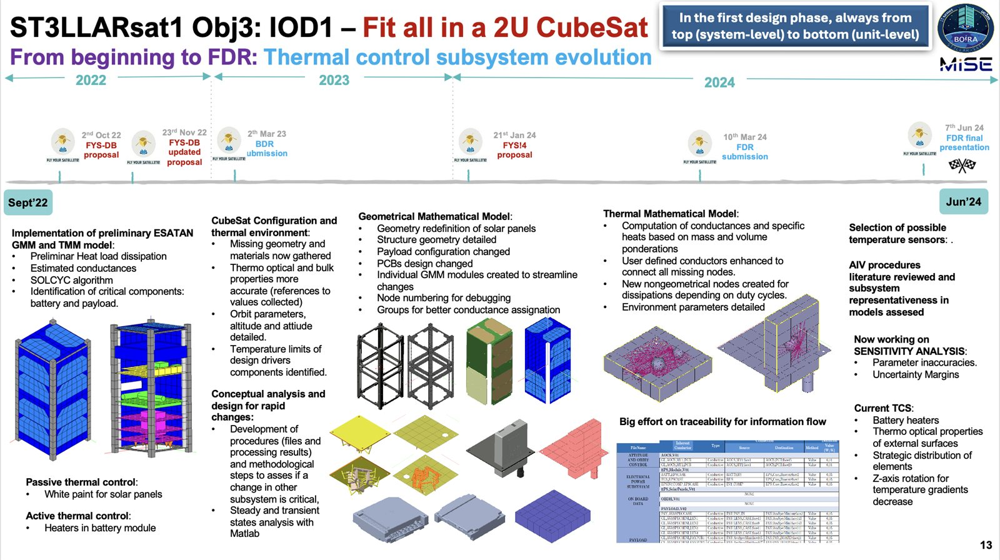
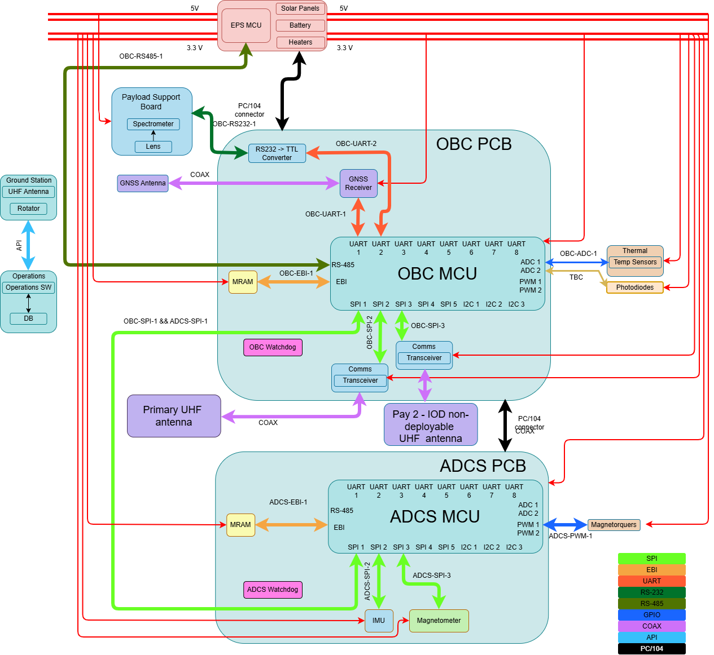
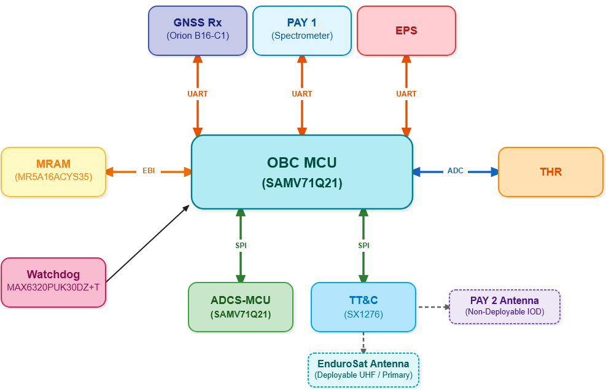
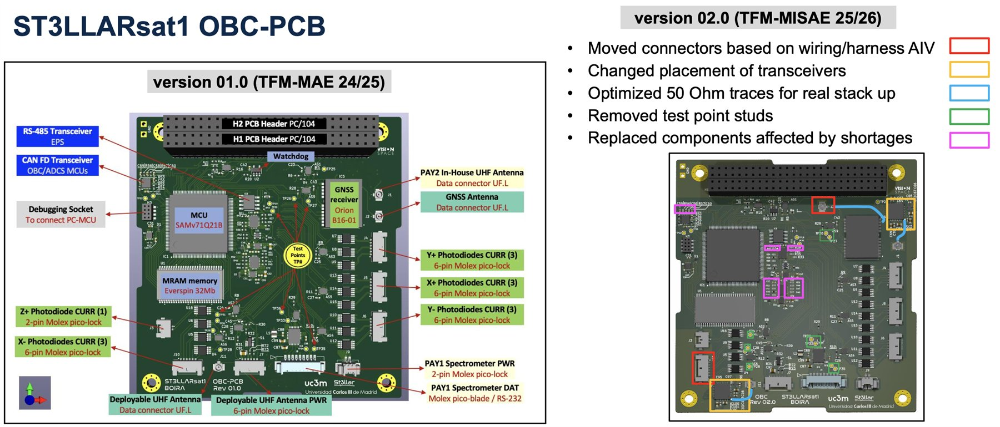

Spacecraft
Design definition, architecture and interfaces
Design summary
With the design consolidation concluded, and 90% of the components procured, ST3LLARsat1 “Boira” is (see also Figure 10 and Table 4) a 2U nanosatellite of dimension 10×10×20 cm and weight 2.083 kg (including a 20% margin), with no propulsion, powered by 8 fixed solar panels (3 full 2U faces + 1U panel on the fourth 2U side + 1U panel on the top face) each with 2 solar cells that produce an average 2.32 W and a maximum 4.87 W (plus 2 batteries that can produce 10.2 Wh). The nominal orbit is an SSO at LEO (from 415–500 km) with an inclination range of 96–98° resulting in an average orbit of 90 minutes and around 2.7 passes a day. The ADCS has been sized to provide a Line-Of-Sight (LoS) Average Pointing Error (APE) of less than 10° given an Average Knowledge Error (AKE) of less than 5°.
Since the idea of the ST3LLARsat program was to use a first mission to prove that we could develop a ‘simple’ CubeSat and learn the system- and component-level knowledge required to undertake in the future more complex in-orbit-demonstration (IOD) missions, the dimension of the first mission was chosen to be 2U since it provided an ideal trade-off between HW costs (<100 k€), development time (5-7 years), and acquisition of system-level knowledge (a 1U would not have enabled us to acquire the wiring/harness know-how required for 2U+ missions).
Based on the above rationale, it was decided at the beginning of the project to:
- Purchase commercial off-the-shelf (COTS) components for those subsystems for which we had no experience in developing them, or whose development cost/time far exceeded the cost of purchasing them (i.e., the structure, EPS, and solar panels),
- Favor flight-proven components (“flight heritage”, marked with an asterisk ‘*’ in Figure 10)
- Focus the efforts on the development of the attitude determination and control system (ADCS) algorithms and of the three in-house HW components produced at UC3M: (i) the compact, non-deployable antenna (Payload 2); (ii) the on-board computer avionics (OBC-PCB), including the software and a coarse sun sensor based on 13 COTS photodiodes; and (iii) the ADCS-PCB – all the in-house development marked in green in Figure 10.

Orbit, SSO
- Altitude
- 415–500 km
- Inclination
- 96–98°
- Avg. orbit
- 90 mins
- Avg. passes per day
- 2.7
- Avg. contact time/pass
- 4.7 mins
MCI
- CoM X/Y/Z (m)
- 0.26 / 0.5 / 0.12
- MoI XX/YY/ZZ (kg·m²)
- 0.00460 / 0.00460 / 0.00145
Power
- Power (W)
- Avg: 2.32 / Max: 4.87
- Batteries
- 2 cells / 10.2 Wh / 3.7 V
Telecommunications
- Frequency (MHz)
- 435–438 (UHF)
- Modulation
- GMSK
- Station call sign
- EA4URI
- EIRP (dBm)
- 10.83
ADCS performance
- LoS APE
- < 10°
- LoS AKE
- < 5°
- Detumbling
- Bdot < 3 orbits
Engineering drawings
ST3LLARsat1 adheres to the physical dimensional and envelope requirements for 2U small satellite platforms. The spacecraft design fully complies with key physical standards, including: stowed launch volume and envelope, protrusion limits and appendages, deployer interface and rails, and mass and center of gravity, among others. Full structural compliance was verified against ESA Fly Your Satellite! Design Specification (FYS-FDS-v4.1). This ensures compatibility across major European orbital deployers.
Detailed 3D assembly models and engineering drawings across all six main faces (±X, ±Y, ±Z) are given in the next 2 figures:



Design definition
At the beginning of this page, in Figure 10, the list of components and internal configuration (including a blow-up) was shown. In the previous section, the external configuration (Figure 11) and again internal (Figure 12) are given by means of precise engineering drawings. To arrive at this design definition several iterations of its configuration were necessary, see Figure 13.

Associated with each configuration, structural and thermal analyses were performed to ensure that all the requirements were fulfilled. Figure 14 shows the sequential increase in detail of the analyses for the structure (top) and the thermal (bottom).


In the remainder of the section, the electrical/data/port connection architecture is presented in more detail since it was part of the in-house developments (MO-4 /Tech-IOD-2 &3), but also we present the structure & mechanical interfaces, and the launcher interfaces –since they are always explicitly asked to be described by the launch responsible prior to considering a CubeSat for launch.
Electrical/data/port connection architecture
Figure 15 shows the electrical/data connection architecture of ST3LLARsat1. It is physically structured around two Printed Circuit Boards (PCB), one for the On-Board Computer (OBC) and the other for the Attitude Determination and Control System (ADCS) –each with its own micro computer unit (MCU) and external memory. The figure also shows the EPS module, the scientific COTS payload (spectrometer), the GNSS antenna, and the UHF antennas (the primary COTS one, and the in-house non-deployable one, which is named payload 2). The different hardware components are interconnected through data and power lines, which are identified with different colors (see legend in the figure’s bottom-right corner). Note that both PCBs are designed to comply with the PC/104 standard, which is used to allow the connection between them and with the EPS in a stack mode (EPS → OBC-PCB → ADCS-PCB).

In more detail, looking at Figure 16, the OBC-PCB hosts the mission-critical core peripherals and high-throughput memory, with the MCU (SAMV71Q21) connecting directly with an external non-volatile memory MRAM (MR5A16ACYS35) via an External Bus Interface (EBI) for rapid logging. In addition, for high-reliability protection an external Watchdog timer (MAX6320PUK30DZ+T) is wired directly to reset lines on the central MCU.
With respect to the peripherals, the OBC-PCB directly interfaces using three distinct UART lines with the power EPS (Endurosat EPS-1), navigation GNSS Rx (Orion B16-C1 receiver), and the scientific payload PAY 1 (Avantes Nexos spectrometer), and with an analog-to-digital converter (ADC) channel to the thermal monitoring subsystem THR. Finally, serial peripheral interface (SPI) lines are used to connect with the TT&C transceiver (SX1276) and with the microcontroller in the other board, the ADCS-MCU (also a SAMV71Q21). The TT&C transceiver connects to two distinct antennas over dedicated RF lines: the primary (deployable, COTS) Endurosat Antenna, and the secondary (in-house, non-deployable) PAY 2 Antenna.

By June 2026, two versions of the OBC-PCB have been designed, see figure below. Version v01 (designed in 2024/25 during a Master in Aerospace Engineering thesis, TFM-MAE) was manufactured in the Summer of 2026 and served to identify several issues corrected in v02 (ongoing design within a Master in Electronic System Engineering thesis, TFM-MISAE), which is expected to be manufactured and tested during Q1-2027.

The ADCS-PCB offloads the attitude determination and control processing to a dedicated MCU (SAMV71Q21) and integrates the main ADCS sensors (IMU ADIS16500 and MMT RM3100) and actuators (CubeSpace MTQs: 2 rods + 1 coil), plus it incorporates a custom design, radiation-hardened H-bridge. Otherwise, it has a similar layout rationale as the OBC-PCB in terms of dividing the components into MCU + MRAM-memory + watchdog on the upper-left corner below the PC/104 ports and use the rest of the board to position the specific peripherals.
Structure & mechanical interfaces
Primary structural dimensions, mass margins, rail configurations, and surface treatment specifications for ST3LLARsat1 “Boira” comply fully with standard 2U CubeSat requirements.
The physical mechanical interface between ST3LLARsat1 and the dispenser relies on three (3) core functional hardware systems: the separation spring mechanism, the physical mechanical inhibitor switches, and the hold-down release mechanisms (HDRM) for deployable elements.
Separation springs
Separation from the neighboring CubeSat in the dispenser is provided by two (2) separation springs (as required by the CubeSat Design Specification CDS 3.2.17.3), centered on the −Z end faces of a diagonal pair of rails, that is opposite to the +Z ejection direction. For ST3LLARsat1, each spring is a stainless-steel (A2) plunger integrated in the −Z standoffs of the Spacemind SM02 frame. The plungers must respect the CDS-given limits of a maximum force of 6.7 N and a stroke of at least 2.5 mm, and must sit flush with the standoff when compressed, so that the stowed envelope is unchanged.
Spring force and stroke will be measured at the CSAT facility for the STM and PFM models using a calibrated force gauge; while the compressed position will be verified during the dispenser fit-check, which also closes the rail-contact requirement (CDS 3.2.9: at least 75 % of the rail length in contact with the deployer rails).
Mechanical inhibitor switches
The SM02 frame will be delivered with six (6) kill switches given by: four (4) lever rail switches (12.6 × 10.4 × 5.6 mm, rated 3 A) mounted one per rail near the +Z end with the lever pointing opposite to the exit direction, and two (2) standoff switches (10 × 7.5 × 2.5 mm, rated 100 mA at 30 V DC) actuated by the −Z spring plungers described above. Inside the dispenser, every switch is held in the stored position by the deployer rails or by the neighboring CubeSat; while on release, the actuators travel to the deployed position and open the CubeSat load circuit.
Two of the four rail lever switches, one on each rail of a diagonally opposite pair, are the flight deployment switches, and together with the remove-before-flight (RBF) pin they form the three electrical inhibits required as per regulations for any CubeSat. Lever switches are preferred to standoff switches because their 3 A rating and positive lever actuation against the deployer rail give a larger contact margin than the 100 mA spring-pin switches, which remain mechanically actuated by the separation plungers but are left unwired.
All three inhibits (lines 1 to 3 in Table 5) are peripheral circuits of the EnduroSat EPS I component that are implemented so that no power therefore reaches any load from either the batteries or the solar arrays –which satisfies the no-electronics-active condition stated under RF emissions. Once the EPS starts after ejection, a self-lock function prevents a transient re-closure of a switch from powering the CubeSat down. On the ground, the self-lock is disabled through a jumper JMP1 for test resets. The inhibit chain will be verified at the CSAT by a functional test on the FlatSat and by an end-to-end test on the PFM in the test dispenser.
Hold-down release mechanisms (HDRM) for the deployable antenna
The only deployable element of ST3LLARsat1 “Boira” is the COTS EnduroSat UHF Antenna III (435–438 MHz, 85 g), mounted on the +Z face, since the in-house dual-circular antenna (Tech.IOD-1), mounted on the −Z face, is non-deployable and thus, requires no release mechanism.
In stowed configuration, four (4) shape-memory-alloy rods are rolled inside a hard-anodized aluminum frame and retained by four (4) doors, so that the antenna stays within the 6.5 mm protrusion allowance of CDS 3.2.6. Each door is released by a burn-wire mechanism with two independent burn resistors (primary and back-up), which the module microcontroller activates in sequence according to two selectable algorithms. Each rod draws about 250 mA at 5 V during release. Once free, the rods straighten to a deployed span of 396.4 mm tip to tip.
This mechanism has flight heritage on EnduroSat platforms and is qualified by the supplier to operate from −35 °C to +85 °C, and tests included vibration, shock and thermal-vacuum testing at unit level.
Because the burn-wire release is a one-shot mechanism whose wires cannot be re-armed by the user, deployment will not be demonstrated on the STM or the PFM. Verification at system level is limited to checking the electrical continuity of the primary and back-up burn-resistor chains, the I2C command, and door-status feedback exercised in test mode with the jumper mounted, and the confirmation after the vibration and thermal-vacuum campaigns that all four doors report closed. This approach also preserves the supplier warranty, which lapses if the rods are deployed before dispenser integration.
Launcher interfaces
Umbilical & external access interfaces. ST3LLARsat1 provides physical umbilical connectivity for pre-launch checks, battery charging, and Remove-Before-Flight (RBF) operations. These are divided between internal deployer window cutouts (operational during launchpad integration) and offboard access interfaces (utilized prior to container encapsulation), see Table 5:
| Interface line | Operational function | Pinout & connector specifications | Accessibility |
|---|---|---|---|
| Line 1 (RBF-1) | RBF enable mechanism | Molex Pico-Blade 2-pin connector | Accessible within deployer via side window cutouts |
| Line 2 (RBF-2) | RBF enable mechanism | Jumper pin | Accessible within deployer via side window cutouts |
| Line 3 (EPS) | Pre-flight battery charging & EPS diagnostic monitoring | USB Type-C interface | Offboard access only (pre-integration into deployer) |
| Line 4 (OBC) | Send/receive to/from OBC, ON/OFF | Alternate USB via SCIC / Molex Pico-Blade 4-pin | Offboard access only (pre-integration into deployer) |
No electronics shall be active from the time the CubeSat is loaded into the deployer, during launch, and until deployment to prevent any electrical or RF interference with the launch vehicle, or other payloads on board the launch vehicle. ST3LLARsat1 will power its primary flight computer immediately following mechanical deployment from the dispenser.
In addition, to comply strictly with ESA FYS-FDS-v4.1 Compliance Matrix, a mandatory 30-minute operational delay is maintained before activating the burn-wire release mechanism for the COTS deployable UHF antenna module. Furthermore, a mandatory 45-minute radio frequency transmission inhibit is enforced after container separation before any radio frequency power amplifiers are energized or radio signals are emitted.